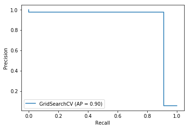

All sources are numbered [n] and listed in the list of sources in the Appendix. Basic knowledge in computer
and data
science is required to understand this work. The most important abbreviations and concepts are explained in the
glossary, which can also be found in the Appendix.
This document was written in HTML and converted into a PDF file using Prince.
The font used is Open Sans, designed by Steve Matteson on behalf of Google.
The goal of this project was to participate in the Data Mining Cup 2019 and produce a report about it, as well as
code artifacts used to solve the challenge. The dataset has been analyzed to prepare the data for the training
step. We identified contributions of features to the prediction, eradicated dependent features and created new
ones. The resulting dataset had four remaining variables with a significant correlation with the prediction variable
"fraud".
The classifiers explored include decision trees, logistic regression, random forests, K-neighbor and support
vectors. The scores they reached with the final released test set from the contest were acceptable for SVC
(37,690€), logistic regression (7,005€) and random forests (2,250€). The theoretical maximum score to achieve with a
100% accurate model would have been 118,635€. A random classifier would have scored negative 5,929,590€.
The challenge lied mainly in finding a suitable scoring function to tune the classifiers with. The dataset was
highly imbalanced. Totally it contained 1775 non fraud samples and 104 fraud samples. The resulting model has to
be regularized so it does not overfit in training but still receive an acceptable score.
Contents
Introduction
Competition
The goal of this project was to participate in the Data Mining Cup 2019 and produce a report about it as well as
code artifacts used to solve the challenge. The following chapter gives an overview of the Data Mining Cup and the
Challenge 2019. The following content a copy from the Data Mining Cup website.
Data Mining Cup
The DATA MINING CUP (DMC for short) has inspired students around the world to pursue intelligent data analysis since
the year 2000. In the 20th DATA MINING CUP in 2019 about 150 teams from 114 universities in 28 countries took part
in the competition. The best teams were invited to Berlin for the awards ceremony at the retail intelligence summit.
Challenge 2019
The number of self-checkout stations is on the rise. This includes stationary self-checkouts, where customers take
their shopping cart to a scan station and pay for their products. Secondly, there are semi-stationary
self-checkouts, where customers scan their products directly and only pay at a counter. The customers either use
their own smartphone for scanning or the store provides mobile scanners. You will probably have encountered this
already.
This automated process helps avoid long lines and speeds up the paying process for individual customers. But how
can retailers prevent the trust they have placed in customers from being abused? How can they decide which purchases
to check in an effort to expose fraudsters without annoying innocent customers?
Scenario
An established food retailer has introduced a self-scanning system that allows customers to scan their items using a
handheld mobile scanner while shopping
This type of payment leaves retailers open to the risk that a certain number of customers will take advantage of
this freedom to commit fraud by not scanning all of the items in their cart.
Empirical research conducted by suppliers has shown that discrepancies are found in approximately 5 % of all
self-scan transactions. The research does not differentiate between actual fraudulent intent of the customer,
inadvertent errors or technical problems with scanners.
Task
To minimize losses, the food retailer hopes to identify cases of fraud using targeted follow-up checks. The
challenge here is to keep the number of checks as low as possible to avoid unnecessary added expense as well as to
avoid putting off innocent customers due to false accusations. At the same time, however, the goal is to identify as
many false scans as possible.
The objective of the participating teams is to create a model to classify the scans as fraudulent or non-fraudulent.
The classification does not take into account whether the fraud was committed intentionally or inadvertently.
Evaluation
The solutions submitted will be assessed and compared based on their monetary value for the food retailer. This can
be calculated using the following cost matrix based on empirical observation.
This chapter describes the data and the variable selection.
Artifacts
The given data is in form of a CSV file with a | as field separator. We received two files:
train.csv containing 1,879 rows with 9 feature columns and one prediction column
test.csv containing 498,122 rows with 9 feature columns and no prediction column
The train.csv file is used to train an estimator. The test.csv file is to use the estimator and predict for each
row if it has class fraud or not. The result has to be written into a new CSV file that has only one column, the
prediction of fraud (1) or not fraud (0). This then has to be submitted, so the contest jury can evaluate the score
of the candidate.
The columns in the data set are the following:
Column name
Description
Value range
trustLevel
A customer's individual trust level. 6: Highest trustworthiness
{1,2,3,4,5,6}
totalScanTimeInSeconds
Total time in seconds between the first and last product scanned
Positive whole number
grandTotal
Grand total of products scanned
Positive decimal number with maximum two decimal places
lineItemVoids
Number of voided scans
Positive whole number
scansWithoutRegistration
Number of attempts to activate the scanner without actually scanning anything
Positive whole number or 0
quantityModification
Number of modified quantities for one of the scanned products
Positive whole number or 0
scannedLineItemsPerSecond
Average number of scanned products per second
Positive decimal number
valuePerSecond
Average total value of scanned products per second
Positive decimal number
lineItemVoidsPerPosition
Average number of item voids per total number of all scanned and not cancelled products
Positive decimal number
fraud
Classification as fraud (1) or not fraud (0)
{0,1}
Feature descriptions
Data cleaning and preprocessing
Since the dataset is already well cleaned and doesn't contain noisy artifacts or null values, we don't have to
clean the data or care for missing data.
Data exploration
Next we want to explore the data. Particularly interesting is the distribution of fraud and not fraud in the train
dataset: Of the 1,879 rows, there are 1,775 cases of not fraud and only 104 cases of fraud. This means the
data is highly imbalanced. Since we know from the task description, that true positives, true negatives, false
positives and false negatives have different costs for the store operator, we know we probably have to come up with
a custom loss function later, weigh the classes or oversample the data. Otherwise an estimator would just learn to
predict no fraud and good is.
Data reduction and projection
We have 9 features we can consider to build the model. But are all of them really relevant? We should find out
first. We do this computing the correlation between the variables. Other possibilities would be using AIC stepwise
procedure.
Before we start, we have to have a closer look at the variables. The variables trustLevel could be
considered a categorical variable. Its range is from 1 to 6 but only integers. But since the level is increasing
and there is some meaning in the order of the values and not only in the ordinal position, we keep it as a numerical
value. Other variables might have high correlation with other variables as for example lineItemVoids and
lineItemVoidsPerPosition. The variables scannedLineItemsPerSecond and totalScanTimeInSeconds also must be
correlating.
The variables scannedLineItemsPerSecond and totalScanTimeInSeconds also seem like they could be combined to create
a new variable totalItemsScanned that could potentially be more predictive. So, we added this to the dataset. Since
we are now interested in distributions and correlations, we create a pairs plot. Or rather two since there are too
many variables to show.
Pairs plot with variables trustLevel, totalScanTimeInSeconds, grandTotal, lineItemVoids,
quantityModifications, fraud
Pairs plot with variables totalItemsScanned, scannedLineItemsPerSecond, valuePerSecond,
lineItemVoidsPerPosition, fraud
We can see that some variables actually do show some separation when correlated to the predictor variable, which is
a good thing. We can also see that some variables are noisy.
For a better understanding and more intuition, we also create a correlation plot with Pearson's method.
Correlation heatmap with Pearson's method
This lets us see what we anticipated before. We score each variable with their correlation value and order them
in a table:
Variable
Correlation
fraud
1.000000
trustLevel
0.319765
totalItemsScanned
0.298423
totalScanTimeInSeconds
0.110414
lineItemVoidsPerPosition
0.090116
scansWithoutRegistration
0.074123
lineItemVoids
0.063496
valuePerSecond
0.028873
scannedLineItemsPerSecond
0.023085
grandTotal
0.001421
quantityModifications
0.000864
Correlation of each variable to the predictor variable fraud
From here we scrap variables that have a very low correlation value or are built into another variable. Variables
we remove because they are correlating with another variable are: scannedLineItemsPerSecond,
lineItemVoidsPerPosition and valuePerSecond. Variables we remove because their correlation value is too low are:
quantityModifications and grandTotal. We end up with these 4 variables: trustLevel, totalItemsScanned,
totalScanTimeInSeconds and lineItemVoids.
Selection of algorithms
Since we're dealing with only a few variables and not with high dimensional data, we can resort to simpler methods
such as linear models, i.e. logistic regression, decision trees or support vector classification SVC.
The scikit-learn cheat sheet gives a good overview which algorithms we
should be exploring. So we will actually follow this chart.
In this chapter we define our baselines and are exploring different methods to build a classifier.
Baselines
To have something to compare this to, we need some baselines. So, what score would we get, if we would simply always
predict 0 or 1 or at random. We also should figure out what the maximum score could theoretically be. So, if we hit
that, we know we are probably overfitting. These are the results on the given the data:
Train
Test
100% accuracy
520€
118,635€
Always predicting fraud
-43,855€
-11,741,215€
Always predicting not fraud
-520€
-118,635€
Random (averaged)
-22,201€
-5,929,590€
Baseline scores on training and test data
These scores show us, that we actually have a pretty hard problem to solve. The model should be very conservative
classifying something as fraud as the penalty is very big.
Pipeline
To try out different pipelines, we decided to use scikit-learn as a framework as it comes with almost all the
necessary tools to accomplish our task. The idea is to create a new Jupyter Notebook for each algorithm to try
that heavily relies on helper functions from several Python scripts. Each notebook will be structured exactly the
same and essentially execute the following steps:
Import packages
Load the fraud training data
Train a classifier with the given data using grid search for hyper parameter tuning
Plot several diagrams about the training process:
Confusion matrix
Precision Recall
Receiver Operating Characteristics - ROC
Learning curves
Scalability of the model
Performance of the model
Find the best prediction threshold to maximize our score
Test what score the model would get with the released test data
The goal was that each of those steps, except the model training, is a single function call. These utility
functions have been implemented in python scripts that reside in the same folder. This pipeline evolved as we were
creating new classifiers and a common pattern eventually emerged.
Notably, we use grid search to find the best hyper-parameters for the model and the training task. Inside the grid
search we additionally use StratifiedKFold to preserve the percentage of samples of each class, so we have a fair
cross validation score. The scoring is our custom scoring implementation.
Utils
The function load_fraud_data loads the data from the training data and transforms the dataframe
according to the variables we decided upon in the previous chapter.
The function score_evaluation creates a confusion matrix with the true labels and the predicted labels,
which it then uses to apply a score.
The function find_best_thresh iteratively searches the threshold value that optimizes the score of
the classifier. In the iteration loop, an average score at that threshold is computed. All scores and thresholds
are then stored to be plotted. Ideally we want to see that the model forms a nice curve with scores and that there
is a global optimum that we find. It may also be that the model produces chaos and the results are arbitrary. A
random curve would strongly indicate that the model will perform poorly on test data.
The function get_test_score takes the trained model and awards it a score from the released test data
of the contest.
Plots
The confusion matrix is generated with plot_fraud_confusion_matrix which uses scikit-learn and is
normalized. The train-test split used to fit the classifier is random.
The precision recall plot is generated with plot_precision_recall_curve from scikit-learn.
The cross-validated ROC curve is generated with plot_cv_roc_curve and has been taken from a
tutorial page from scikit-learn. The visualization is more advanced than the normal ROC
plot, as it uses cross-validated models to generate multiple ROC curves in the same plot. This allows us to see an
interval in which the ROC curve would probably lie with test data.
The learning curves plot is generated with
plot_learning_curve. The implementation is heavily inspired by another sckit-learn
tutorial. The first plot shows the training and the cross-validated score
during the training process by using more samples.
Decision Tree
First we try to build a decision tree classifier. We use the dataset as prepared in the previous chapter. We use a
decision tree as the first simple algorithm knowingly it will probably either overfit or not fit at all as decision
trees are prone to.
The grid search for DecisionTreeClassifier had the task to find the best hyper-params out of the following:
criterion: gini, entropy
splitter: best, random
The best score was achieved with criterion=gini and splitter=random. The score is 520€.
We actually get the maximum positive monetary value. This mean our model fitted the data perfectly. This is commonly
the case with decision trees, that they overfit very likely. We would have to combat this with regularization
techniques such as limiting the splits or the depth.
Now if we train a model with the found hyper-parameters, we get the following plots:
Decision tree confusion matrix
As the confusion matrix shows, the model is not good at predicting fraud at all.

Decision tree precision-recall
In this plot we see that the model does not transition from precision to recall and rather has a hard point at which
it suddenly changes. This indicates the model is probably too simplistic.
Decision tree cross-validated ROC curves
We see the same here as we do multiple cross-validations. We intent the curve to be more belly shaped or round. Since
we are dealing with a severe imbalance of data, it actually does not make much sense to generate ROC curves as they
will always very much lean towards one side and reading them will be difficult. So, that's why in the further explored
algorithms we do no longer look at ROC curves. Source
Decision tree learning curves
Finally, the learning curves show us that the model is not generalizing and rather only learning the training data.
No wonder as it's an unregularized decision tree.
We now want to figure out at what level we have to set the threshold for the model to predict fraud or no fraud. We do
not simply want to assume that at 50% probability it's either fraud or no fraud as we want to optimize our score at
the end. So, we built an algorithm that tries to find the best threshold to use by iterating through different
thresholds and with each simulating a train-test split and predicting the class probabilistically. The best threshold
found is to depict fraud when the probability is at 26% to maximize our score. We get a score of 133€ for it. But a
closer look at the distribution of scores reveals that this was pure coincidence as the model is too simple in itself:
Decision tree thresholds vs score
The model also does not perform well at all with the released test data from the contest. It scores -37,340€ in
monetary value.
But not to dwell too much with this algorithm, we are going to move on to an algorithm that can generate a model that
has more capacity and better methods to avoid overfitting now.
Next we try a logistic regression model. This is a linear model that uses a logistic function to model a binary
variable. Since we are trying to solve a binary classification problem, this could work out.
The grid search for LogisticRegression had the task to find the best hyper-params out of the following:
C: 0, 0.1, ..., 1
solver: liblinear, lbfgs, newton-cg, sag, saga
The best score was achieved with C=1 and solver=lbfgs which are the default scikit-learn parameters.
The score although is -405€.
When looking at the confusion matrix of a model trained with these parameters, we see little difference compared to
the decision tree model:
Logistic regression confusion matrix
The precision-recall plot looks more promising compared to the decision tree model. We now see that the model has
generalized. The curve does not have to be smooth produce acceptable results, but it would be good.
Logistic regression precision-recall
In the learning curves we see that the cross-validated score actually reaches a positive value. But we also see
that the training score somehow reached a negative value. while the cross-validated score is barely positive. This
is due to the imbalanced dataset. In a slice of the data, the maximum might be a negative value. But we know in the
cross-validated score we can reach up to 520€.
Logistic regression learning curves
Once we try to find the best threshold to decide between fraud and no fraud, we find, that this model actually
has a more predictive inner structure, as there clearly as a "best" threshold to be chosen to maximize the score.
The threshold finding algorithm has figured, that with this model, the threshold should be pretty high to maximize
the score to pay the evaluation matrix respect.
Logistic regression score-threshold curves
The best threshold is 91% and the score at that point is 78€. If we evaluate the model on the released test data,
we get a score of 44,605€ which is a great score compared to the theoretical maximum.
Random Forest
The grid search for RandomForestClassifier had the task to find the best hyper-params out of the following:
n_estimators: 100, 150, 200, 250, 300
criterion: gini, entropy
The best score was achieved with n_estimators=250 and criterion=gini. The score is 520€ which is the optimum.
The precision-recall plot looks more promising compared to the decision tree model. We now see that the model has
generalized. The curve does not have to be smooth produce acceptable results, but it would be good.
Random forest precision-recall
In the learning curve plot we can see that the model has a high variance problem. But nonetheless, both training
and cross-validated scores are positive, which is something we didn't reach before.
Random forest learning curves
The score-threshold plot is a nice smooth curve, which is what we theoretically want. But we also want a global
optimum in the curve that we can pick to optimize the score. This curve is topping out and there are several
global optima available. This is a problem.
Random forest score-threshold curves
The best threshold is 56% and the score at that point is 132€. If we evaluate the model on the released test data,
we get a score of 10,455€ which is not too far off the maximum score possible but not the best algorithm evaluated.
KNeighbor Classifier
The grid search for KNeighborsClassifier had the task to find the best hyper-params out of the following:
n_neighbors: 3, 5, 8, 9, 10, 11, 12, 15
weights: uniform, distance
algorithm: auto, ball_tree, kd_tree
The best score was achieved with n_neighbors=10, weights=uniform and algorithm=auto.
The score is -520€ which is what we would get if we would always predict 0 (not fraud). So, the model has probably
learned to always predict not fraud.
This is exactly what we see in the confusion matrix. Fraud is just never predicted.
KNeighbor classifier confusion matrix
In the learning curve we see the same phenomena. The training score starts out good but gets worse and worse.
KNeighbor classifier learning curves
The maximum score in the score-threshold diagram also reveals that this models best threshold is just the threshold
that ensures fraud is never predicted. Every other choice would be worse than the baseline.
KNeighbor classifier score-threshold curves
The best threshold is 56% and the score at that point is -126€. If we evaluate the model on the released test data,
we get a score of -118,635€.
Support Vector Classifier
The grid search for SVC had the task to find the best hyper-params out of the following:
C: 0.5, 0.6, ..., 1
kernel: rbf, linear
gamma: scale, auto
The best score was achieved with C=0.8, kernel=linear and gamma=scale. The score is 295€.
The precision-recall plot looks good and nearly how we would want it to be.
SVC precision-recall
The learning curves reveal again a slight high variance problem.
SVC learning curves
Now the score-threshold curve is a smooth curve with a global optimum. Finally the perfect curve we were looking
for.
SVC score-threshold curves
The best threshold is 56% and the score at that point is 84€. If we evaluate the model on the released test data,
we get a score of 44,785€.
Neural Net
We also tried to fit a neural network to the data. The challenge herein lied in developing a loss function that
does not prohibit gradient descent from finding good steps and does reflect our score evaluation.
The network architecture would have been as follows:
model = tf.keras.Sequential([
tf.keras.layers.Dense(64, activation='relu'),
tf.keras.layers.Dense(64, activation='relu'),
tf.keras.layers.Dense(1, activation='sigmoid')
])
Neural network architecture
Using the standard loss function binary_crossentropy this model converged. The problem was that it
did not optimize the score but rather the accuracy which is not what we want. So, we looked for a way to build a
loss function that has weights to our desire and still allows the algorithm to learn:
This function is inspired by a Github Issue comment. But when using this function,
the learner could not converge anymore because the loss was not scaled properly. We couldn't get this to work as
expected and abandoned the idea of neural networks.
The different classifiers performed roughly in the order we would have expected them to. What we didn't know is if
the actual scores would turn out to be any good and competitive in the competition.
What we also noticed when trying a more complex method than an SVC, we struggled to get the classifier to train with
the data. With such little number of samples, it is not feasible to train a neural network.
Scores
Algorithm
Score in training
Score in test
SVC
84€
44,785€
Logistic Regression
78€
44,605€
Random Forest
132€
10,455€
Decision Tree
96€
-37,340€
KNeighbor Classifier
-126€
-118,635€
Resulting scores of different model algorithms tried
The best classifier thus is the SVC closely followed by Logistic Regression for this particular problem. We are not
surprised by the outcome as an SVC is able to come to the best trade off. It can cope with linear data extremely
well and if the data is non-linear, it can project the data into a linear space. The close follower Logistic
Regression probably did that good because we boiled down the variables down to four and had the problem of binary
classification to which logistic regression is very easy to apply.
Conclusion
It was very helpful to read into data pre-processing, variable selection, training algorithms, cross-validation,
grid search, regularization, evaluation and so on. This was a small enough project to not be overloaded with the
challenge, but still tricky enough that simple copy-paste from the Internet simply doesn't work. We had to think
hard about the problem and make the right conclusions to get to an acceptable result.
Personally, I think the contest was a bit artificial as the training set was so small. Training a classifier on such
little data will inevitably result in some variance in the submitted results from other contestants. Thus, luck was
certainly needed to perform well in this competition besides building a robust classifier.
Overall, I'm happy to have completed the project and I think I learned a lot of hands-on techniques that I only
heard of in lectures.
Appendix
References
Figures
Software
The following software was used to generate the results of this work: